03. As publicações, uma a uma
E1POST
🏆 Voto de Louvor do Município de Penacova
2.ª, 20 jul · 18h00 · Notícia fresca (o louvor foi assinado a 17 jul pelo Presidente da Câmara) · ✅ publicado
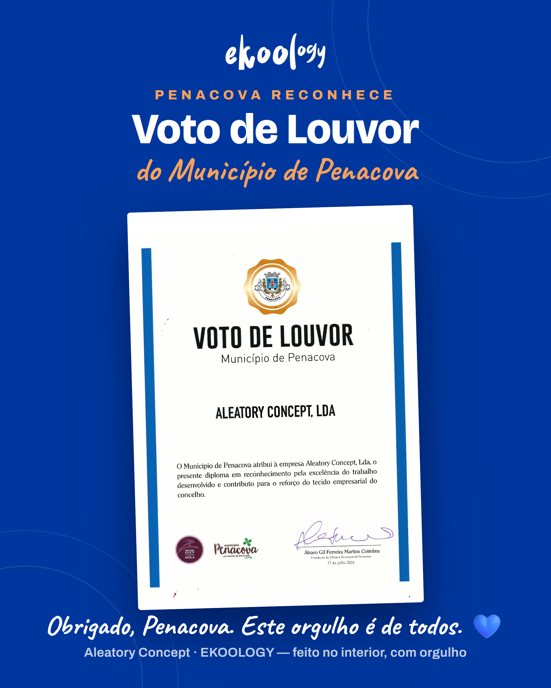
🏆💙 Há notícias que sabem a festa inteira.
No dia 17 de julho, o @municipiodepenacova atribuiu à Aleatory Concept — a casa do carvão EKOOLOGY — um Voto de Louvor pela excelência do trabalho desenvolvido e pelo contributo para o reforço do tecido empresarial do concelho.
Obrigado, Penacova. 🙏 Este reconhecimento é de toda a equipa que, todos os dias, transforma a acácia invasora na melhor brasa do país — aqui, no interior, com orgulho.
Cada grelhada limpa a floresta. E cada gesto destes dá força a quem escolheu crescer no centro de Portugal. 🌲🔥
#EKOOLOGY #Penacova #VotoDeLouvor #FeitoEmPortugal #Biocarvão #OrgulhoDoInterior #CadaGrelhadaLimpaAFloresta #CentroDePortugal
Identifica o @municipiodepenacova (IG e FB). Depois de publicado, enviar por mensagem à página do Município — costumam partilhar, e é alcance local a custo zero.
E2POST
🦌 Empresa Gazela 2025 — CCDR Centro
5.ª, 23 jul · 12h30 · Facto verificado na lista oficial da CCDR (Aleatory Concept, entre as 159 da Região Centro) · já agendado
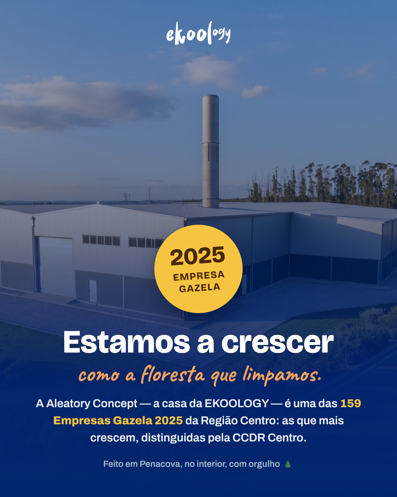
🦌💛 Podem chamar-nos gazela.
A Aleatory Concept — a casa da EKOOLOGY — é uma das 159 Empresas Gazela 2025 da Região Centro, distinção da CCDR Centro para as empresas jovens que mais crescem. Os critérios não perdoam: crescimento anual acima de 20%, três anos seguidos.
Crescer assim a partir de Penacova só é possível com uma equipa que acredita — e com todos os que escolhem um carvão que faz bem à floresta. Este selo também é vosso. 🌲
Cada grelhada limpa a floresta. E nós continuamos a crescer com ela. 🔥
#EKOOLOGY #EmpresaGazela #RegiãoCentro #CCDRCentro #Penacova #FeitoEmPortugal #Biocarvão #CadaGrelhadaLimpaAFloresta
E3REEL
🎬 «Está no ar» — tour do novo koolnature.pt
4.ª, 22 jul · 18h00 · Lançamento do site · vídeo 26s (scroll real do site em telemóvel, legendado, com crepitar) · já agendado
O nosso novo lar digital está no ar — com morada oficial: koolnature.pt 🔵
Lá dentro:
📖 Manual do Grelhador com a Estação do Chef — temperaturas internas, pontos da carne e relógio de brasa
🍽️ 17 receitas, do couvert à sobremesa
👨🍳 Chef Kool — o nosso chef com inteligência artificial, pronto a responder a qualquer pergunta de brasa
🌲 E a missão de sempre: cada grelhada limpa a floresta
Vai explorar e diz-nos o que achaste 👉 koolnature.pt (link na bio)
#EKOOLOGY #NovoSite #Biocarvão #CadaGrelhadaLimpaAFloresta #AprovadoPelaMãeNatureza #Grelhados #BBQPortugal #MadeInPortugal
O vídeo mostra o site real a fazer scroll num telemóvel: home → 17 receitas → Manual/Estação do Chef. Antecipação do carrossel #2 (29 jul), que aprofunda página a página.
E4POST
🌡️ A Estação do Chef — o termómetro de bolso
Sáb, 25 jul · 17h00 · Funcionalidade do site (arte com a interface real) · já agendado
O que separa o suculento do seco? Graus. 🌡️
Dentro do novo koolnature.pt vive a Estação do Chef: escolhes o ponto — do bleu ao bem passado — e ela mostra-te a temperatura interna exata, quando tirar da grelha e quanto descanso dar. 18 proteínas, as tabelas que os profissionais usam e um relógio de brasa que te avisa quando virar.
O teu termómetro finalmente arranjou um treinador. 👨🍳
👉 koolnature.pt → Manual do Grelhador
#EKOOLOGY #EstaçãoDoChef #ManualDoGrelhador #TemperaturaInterna #GrelhadosPerfeitos #TruquesDeChef #Churrasco #CadaGrelhadaLimpaAFloresta
Sai no sábado à tarde — a hora em que meio país está a acender a brasa e a outra metade a pensar nisso.
E5POST
⏳ Teaser «Amanhã, às 18h00»
Dom, 26 jul · 12h30 · Countdown para a estreia do Reel do Chef Vítor Sobral (2.ª, 27 jul, 18h00) · já agendado
Amanhã, às 18h00, aqui. 🔥
Um dos grandes chefs de Portugal vem acender a nossa brasa — e contar porque é que a escolheu para a cozinha dele.
Ativa as notificações e aparece. Vais querer ver isto.
#EKOOLOGY #Biocarvão #CadaGrelhadaLimpaAFloresta #ChefsDePortugal #BrasaPortuguesa #Grelhados
Não revela o nome — o mistério é o gancho. Transforma o arranque do plano (Sobral, 2.ª às 18h00) num acontecimento.
E6REEL
🎬 «A nossa história em 90 segundos»
3.ª, 28 jul · 12h30 · Vídeo institucional (animação de quadro branco, locução original) recuperado em 1080p e adaptado a reel 9:16 com legendas dinâmicas · já agendado
A nossa história em 90 segundos. 🎬
Do problema das acácias invasoras à brasa mais limpa de Portugal — desenhada passo a passo, do «piro-quê?» à certificação FSC e à parceria com a WWF.
Diz-nos nos comentários: já conhecias a pirólise lenta? 👇 O nosso Chef Kool responde a todos.
👉 koolnature.pt (link na bio)
#EKOOLOGY #Biocarvão #PiróliseLenta #CadaGrelhadaLimpaAFloresta #AprovadoPelaMãeNatureza #MadeInPortugal #Grelhados
Pedido do Nuno (21/07). A locução de há 5 anos continua 100% atual — incluindo o «sem faísca». Sai no único dia da semana de lançamento sem post, entre o Sobral e o carrossel do site.
#1REEL
Chef Vítor Sobral × EKOOLOGY
2.ª, 27 jul · 18h00 · Prova social · vídeo 74s (editado, legendado, com marca)
Quando um dos grandes chefs de Portugal fala de brasa, nós ouvimos. 🔥
O Chef Vítor Sobral grelha na Carvoaria da Esquina com o nosso biocarvão de acácia portuguesa — e explica porquê: 95% de concentração térmica, sem chama, sem fumo em excesso. Só brasa a sério.
Cada saco EKOOLOGY é feito de acácia invasora. Cada grelhada ajuda a limpar a floresta portuguesa. 🌲
👉 Manual do Grelhador e onde comprar: koolnature.pt (link na bio)
#EKOOLOGY #Biocarvão #CadaGrelhadaLimpaAFloresta #AprovadoPelaMãeNatureza #VitorSobral #CarvoariaDaEsquina #Grelhados #BrasaPortuguesa #ChefsDePortugal #BBQPortugal
Autorização: ✔ confirmada (o Chef é amigo da casa e o vídeo também promove a Carvoaria da Esquina — win-win). Marcar @vitorsobral e a página do restaurante · impulsionar este (é o conteúdo mais forte do mês).
#2CARROSSEL · 7
O novo lar da brasa portuguesa
4.ª, 29 jul · 12h30 · Lançamento do site
Está no ar: koolnature.pt 🔵
Não é (só) um site de carvão. É o novo lar da brasa portuguesa:
📖 Manual do Grelhador com a Estação do Chef — pontos, temperaturas internas e relógio de brasa
🍽️ 17 receitas, do couvert à sobremesa
🤖 Chef Kool, um chef com inteligência artificial que responde ao segundo
🌲 E a nossa missão: cada grelhada limpa a floresta
Arrasta, espreita e diz-nos: qual vais experimentar primeiro?
#EKOOLOGY #Biocarvão #CadaGrelhadaLimpaAFloresta #NovoSite #ManualDoGrelhador #Grelhados #ChurrascoPerfeito #MadeInPortugal
#3POST
Apresentamos o Chef Kool
5.ª, 30 jul · 18h00 · Manual & Chef Kool
Este é o Chef Kool. 👨🍳
Nasceu de um pedaço de biocarvão, tirou o curso com os melhores e agora vive no nosso site — pronto a responder a QUALQUER pergunta de brasa, a qualquer hora:
«Quanto carvão para 10 pessoas?»
«A que temperatura tiro o robalo?»
«Como acendo sem álcool?»
Pergunta-lhe o que quiseres em koolnature.pt (canto inferior direito). E sim: ele sabe mesmo do assunto — foi treinado com o Manual do Grelhador inteiro. 🔥
#EKOOLOGY #ChefKool #InteligenciaArtificial #Grelhados #TruquesDeBrasa #Biocarvão #CadaGrelhadaLimpaAFloresta #Inovação
#4POST
Manifesto: o carvão que junta pessoas
6.ª, 31 jul · 17h00 · Comunidade
Nunca vendemos só carvão.
Vendemos a tarde que se estica até a brasa morrer. O brinde ao pôr do sol. A mesa onde cabem sempre mais dois. O avô a ensinar o neto a virar a sardinha «só uma vez».
O carvão que junta pessoas — e que, já agora, limpa a floresta portuguesa enquanto o faz. 🌲🔥
Marca aqui aquela pessoa sem a qual não há churrasco.
#EKOOLOGY #OCarvãoQueJuntaPessoas #CadaGrelhadaLimpaAFloresta #Churrasco #FamíliaEAmigos #VerãoPortuguês #Grelhados
#5POST
Receita de domingo: sardinhas de arraial
Dom, 2 ago · 11h00 · Receitas
Domingo. Sardinhas. Pão. Não é preciso mais filosofia. 🐟
O segredo dos arraiais:
• Brasa forte e bem formada (sem chama!)
• Sal grosso antes de irem à grelha
• 3–4 min de cada lado — e vira-se UMA vez
• Prontas quando a pele descolar sozinha
• Servir em cima do pão, claro
Receita completa e mais 16 em koolnature.pt → Receitas. Bom domingo! ☀️
#EKOOLOGY #Sardinhas #ReceitasNaBrasa #CozinhaPortuguesa #DomingoEmFamília #Grelhados #ArraialPortuguês #CadaGrelhadaLimpaAFloresta
#6CARROSSEL · 7
5 razões para nunca mais voltares ao carvão de sempre
2.ª, 3 ago · 12h30 · Produto
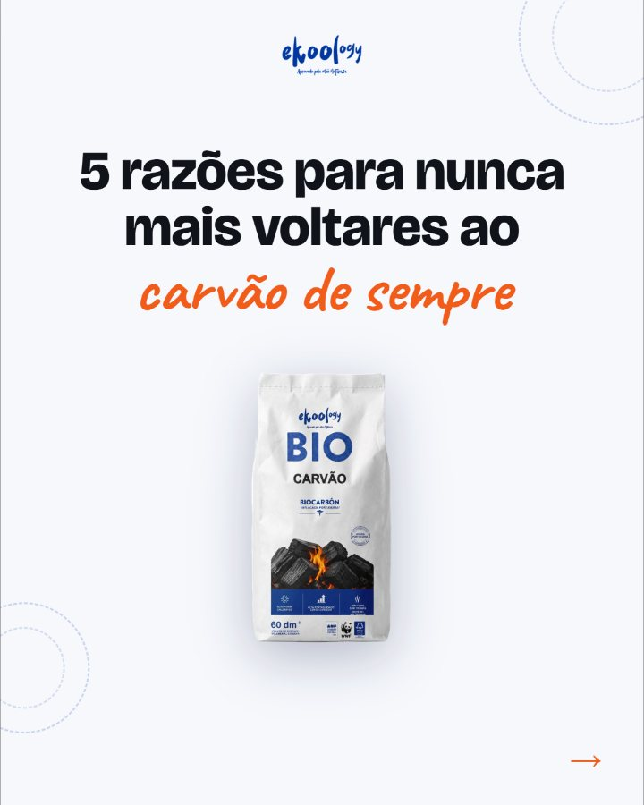
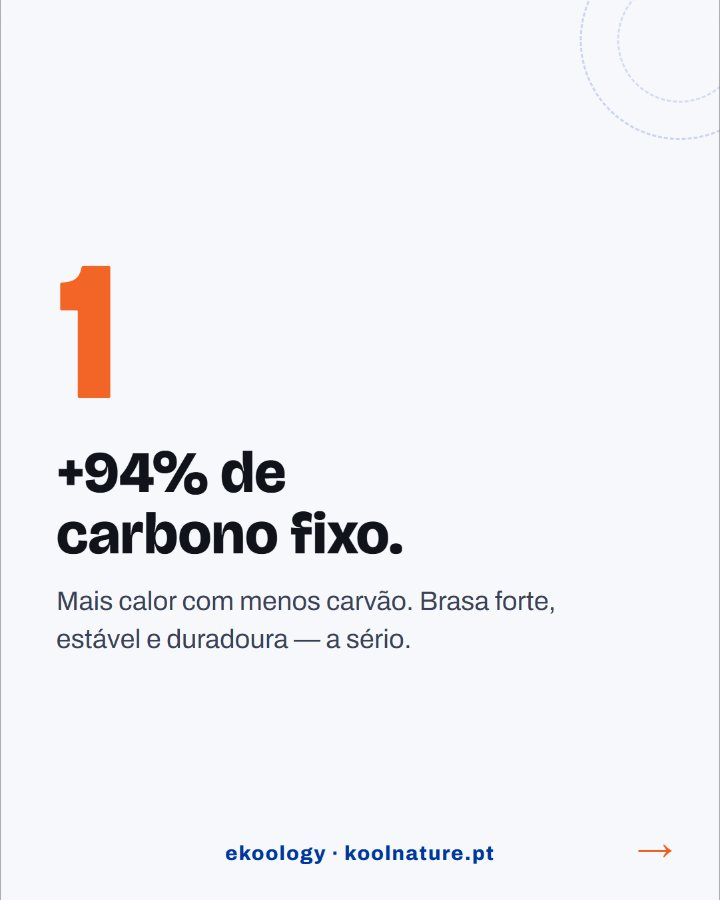
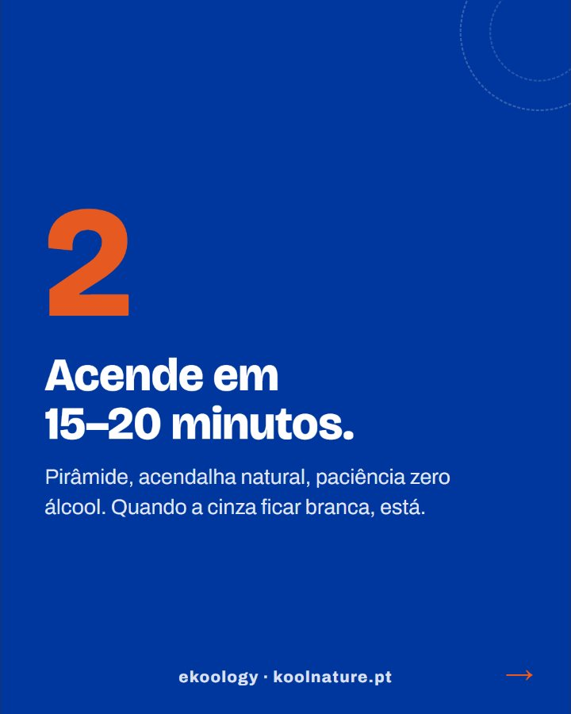
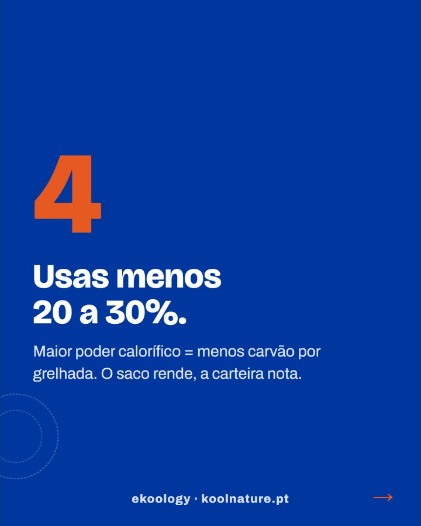
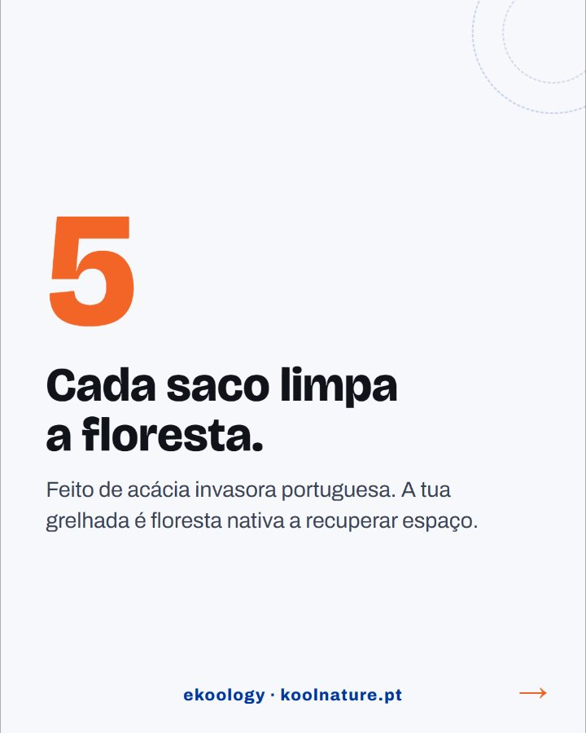
Carvão é tudo igual? Era o que faltava. 🔥
Biocarvão EKOOLOGY vs. carvão de sempre:
1️⃣ +94% de carbono fixo — mais calor, brasa mais estável
2️⃣ Acende em 15–20 minutos, sem álcool
3️⃣ Sem fumo, sem faíscas, sem pós no saco
4️⃣ Usas menos 20 a 30% por grelhada
5️⃣ E é feito de acácia invasora — cada saco limpa a floresta portuguesa
Guarda este post para mostrar àquele amigo que «sempre usou o outro». 😉
À venda no Aldi e em revendedores por todo o país → koolnature.pt
#EKOOLOGY #Biocarvão #CarvãoVegetal #Churrasco #GrelhadosPerfeitos #SemFumo #Sustentabilidade #CadaGrelhadaLimpaAFloresta
#7POST
No Aldi, vestimos a camisola da casa
4.ª, 5 ago · 18h00 · Produto / transparência
Pequena grande revelação: o carvão biológico BBQ que encontras no Aldi… somos nós. 🔵
Não leva a nossa marca — leva a camisola da casa. Mas lá dentro é o mesmo biocarvão de acácia invasora portuguesa, da mesma pirólise lenta, feito em Penacova com energia solar.
Porquê? Porque queremos que TODOS possam grelhar melhor — e limpar a floresta ao mesmo tempo.
Procura «carvão biológico BBQ» na tua loja Aldi. 😉
#EKOOLOGY #Aldi #AldiPortugal #Biocarvão #Transparência #MadeInPortugal #Penacova #CadaGrelhadaLimpaAFloresta
✅ Aprovado pelo Nuno (20 jul): menção ao Aldi confirmada — a publicação está ativa e sai a 5 de agosto às 18h00.
#8POST
A família completa
6.ª, 7 ago · 17h00 · Produto
Não é só brasa. É uma família. 🔵
🔥 Biocarvão — o clássico da grelha, acende em 15-20 min
🟣 Briquetes — queima longa e uniforme, para entrecostos e defumados
🌲 Pellets ENplus® A1 — a mesma floresta a aquecer a tua casa no inverno
Da grelha de verão à salamandra de inverno, a acácia invasora portuguesa nunca teve um destino tão bom.
Conhece a família toda em koolnature.pt → Produtos
#EKOOLOGY #Biocarvão #Briquetes #Pellets #ENplusA1 #AquecimentoSustentável #MadeInPortugal #CadaGrelhadaLimpaAFloresta
#9POST
Receita de domingo: polvo à lagareiro
Dom, 9 ago · 11h00 · Receitas
Há grelhados… e há polvo à lagareiro na brasa. 🐙
O truque que muda tudo: o polvo já vai cozido para a grelha — bem seco — e só lá está 3–4 minutos de cada lado, em brasa forte, para ganhar aquela pele estaladiça e o sabor a fumo.
Batatas ao murro, azeite de alho aquecido ao lado, e é um domingo ganho.
Receita passo a passo: koolnature.pt → Receitas → Do mar
#EKOOLOGY #PolvoÀLagareiro #ReceitasNaBrasa #CozinhaPortuguesa #Grelhados #DomingoEmFamília #CadaGrelhadaLimpaAFloresta
#10CARROSSEL · 7
Ainda grelhas às cegas?
2.ª, 10 ago · 12h30 · Manual & Chef Kool · conteúdo para GUARDAR
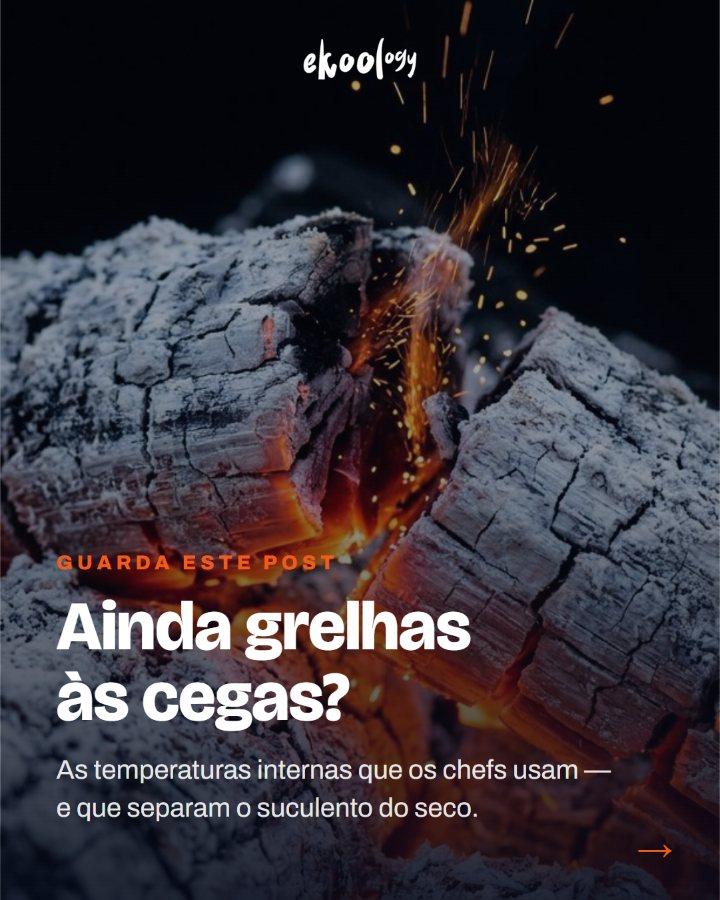
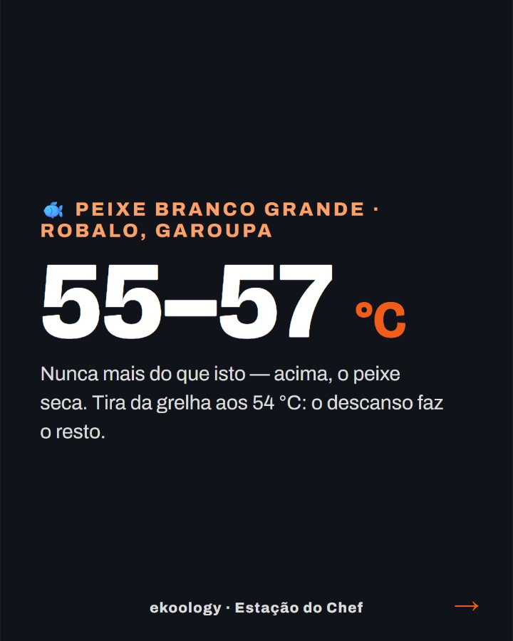
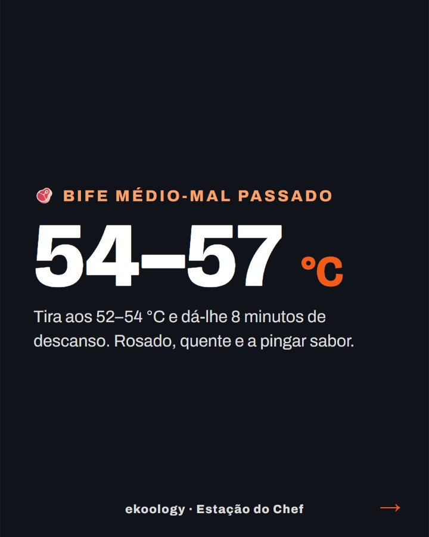
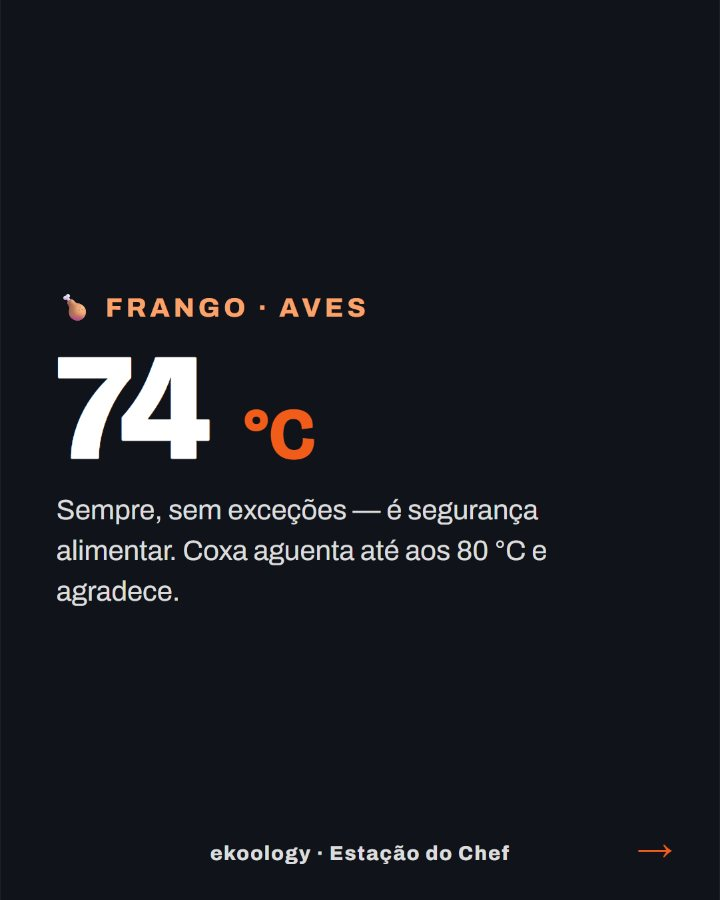
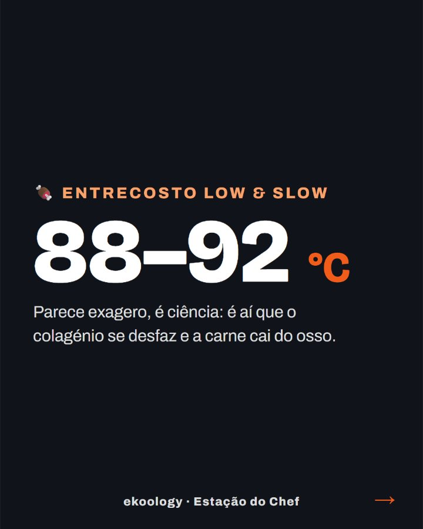
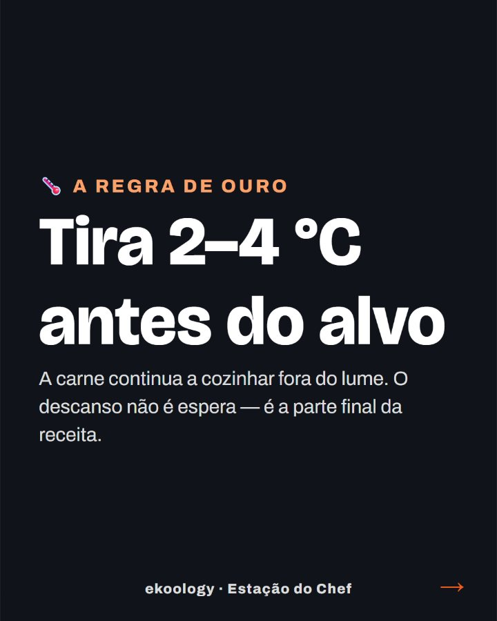
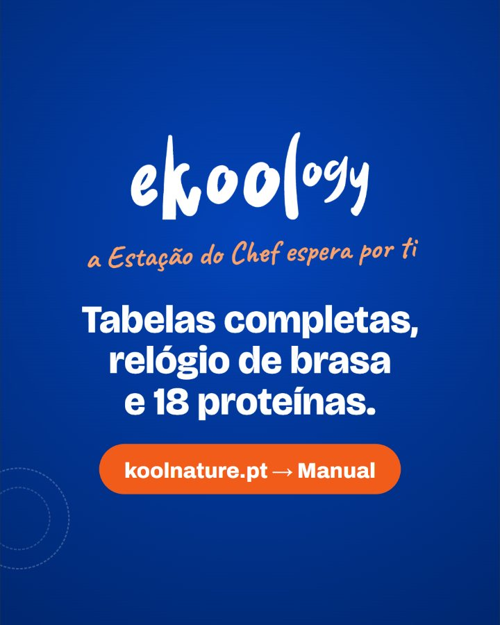
O que separa o suculento do seco não é sorte — são graus. 🌡️
As temperaturas internas que os chefs usam (e que vais querer guardar):
🐟 Robalo e peixe branco grande: 55–57 °C, nunca mais
🥩 Bife médio-mal: 54–57 °C
🍗 Frango: 74 °C, sempre — segurança primeiro
🍖 Entrecosto low & slow: 88–92 °C, onde o colagénio se rende
E a regra de ouro: tira 2–4 °C antes do alvo. O descanso completa.
Tabelas completas com 18 proteínas + relógio de brasa na Estação do Chef: koolnature.pt → Manual 📖
#EKOOLOGY #ManualDoGrelhador #TemperaturaInterna #GrelhadosPerfeitos #TruquesDeChef #BBQTips #Churrasco #CadaGrelhadaLimpaAFloresta
#11CARROSSEL · 6
Acende como um mestre
4.ª, 12 ago · 18h00 · Manual & Chef Kool
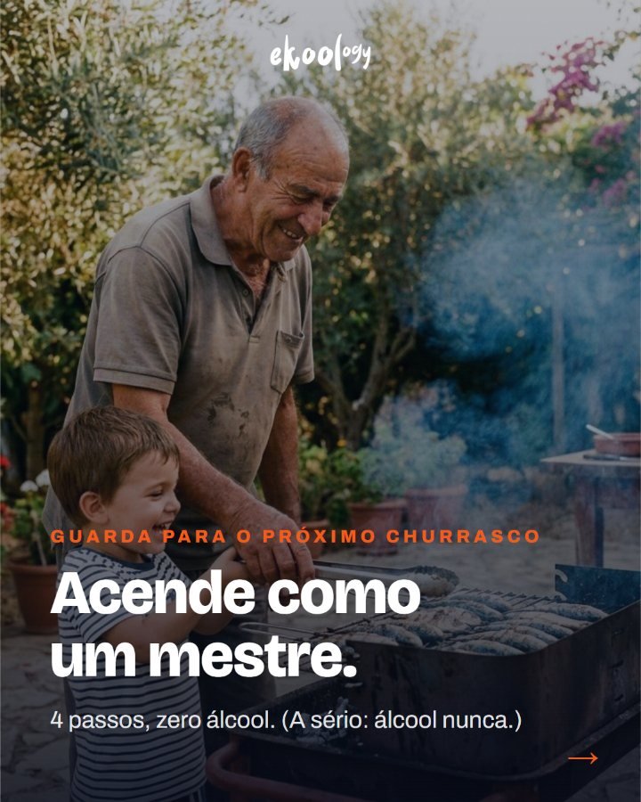
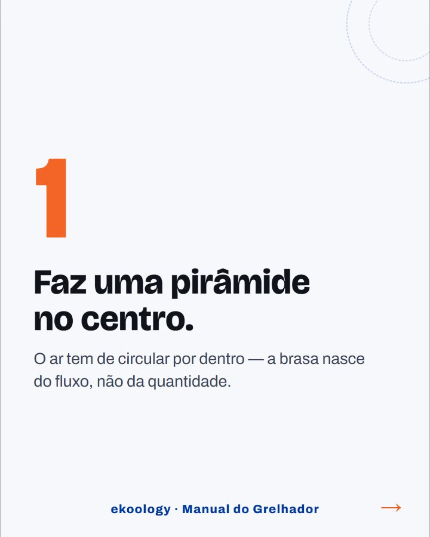
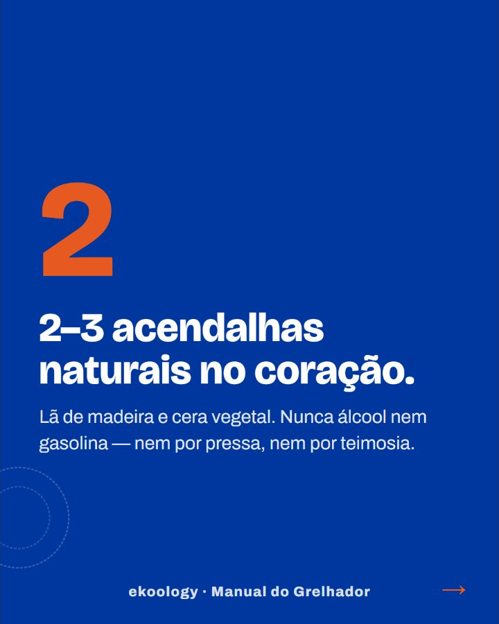
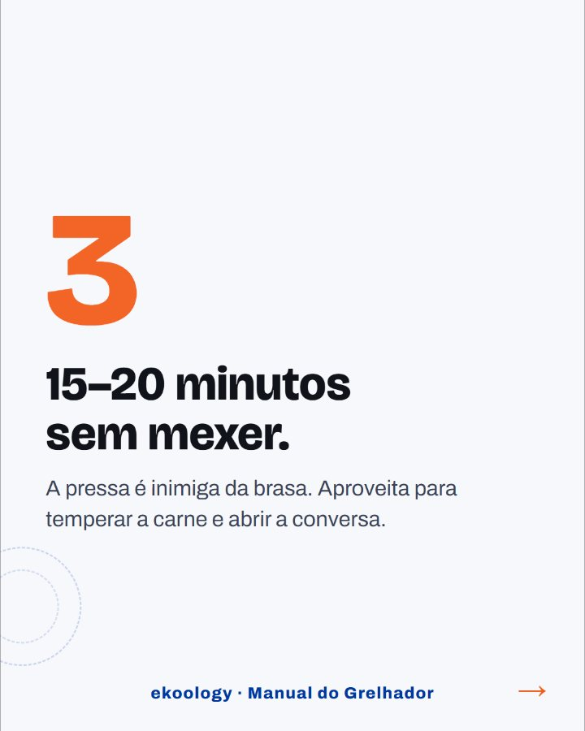
Acender a brasa não é um teste de paciência — é um ritual de 4 passos. 🔥
1️⃣ Pirâmide no centro (o ar tem de circular)
2️⃣ 2–3 acendalhas naturais no coração — álcool NUNCA
3️⃣ 15–20 minutos sem mexer (aproveita: tempera a carne, abre a conversa)
4️⃣ Cinza branca à vista? Espalha e grelha.
Com EKOOLOGY é ainda mais rápido do que estás habituado — menos espera, mais mesa.
Fogo direto, indireto e duas zonas explicados no Manual: koolnature.pt
#EKOOLOGY #ComoAcenderCarvão #ManualDoGrelhador #TruquesDeBrasa #Churrasco #GrelhadosPerfeitos #CadaGrelhadaLimpaAFloresta
#12POST
Citação: Chef Vítor Sobral
6.ª, 14 ago · 17h00 · Prova social (2.ª vida do vídeo #1)
«Grelha sem chama, sem fumo. 95% de concentração térmica.»
— Chef Vítor Sobral, na Carvoaria da Esquina 👨🍳
Quando quem grelha todos os dias para centenas de pessoas escolhe o nosso biocarvão, não é publicidade — é critério profissional.
Restaurantes e churrasqueiras: fornecemos o canal HORECA com condições profissionais e apoio técnico de brasa. Fala connosco → koolnature.pt → Contactos
#EKOOLOGY #VitorSobral #HORECA #RestaurantesPortugal #Biocarvão #BrasaProfissional #CarvoariaDaEsquina #CadaGrelhadaLimpaAFloresta
#13POST
Receita ★: arroz de tomate com poejos no tacho de barro
Dom, 16 ago · 11h00 · Receitas · o prato-bandeira
A brasa não é só grelhar. É cozinhar. 🍅
Arroz de tomate com poejos, num tacho de barro pousado nas brasas em coroa: refogado calmo, tomate a apurar, arroz carolino 15–16 minutos, e os poejos SÓ no fim, já fora do lume.
Truque de mestre: tira-o mais caldoso do que gostarias — o barro continua a cozinhar na mesa.
É o prato que prova que a brasa vai muito além do óbvio. Receita completa: koolnature.pt → Receitas → Tachos de brasa
#EKOOLOGY #ArrozDeTomate #TachoDeBarro #CozinhaPortuguesa #ReceitasNaBrasa #ComidaDeConforto #DomingoEmFamília #CadaGrelhadaLimpaAFloresta
#14CARROSSEL · 6
Cada grelhada limpa a floresta
2.ª, 17 ago · 12h30 · Marca & Missão
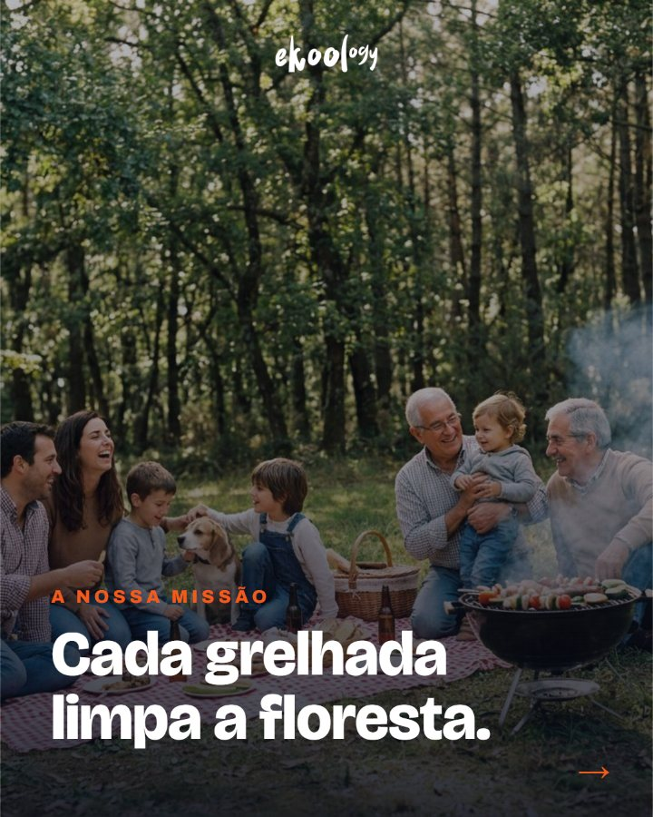
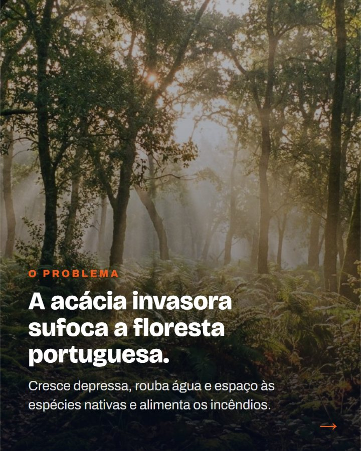
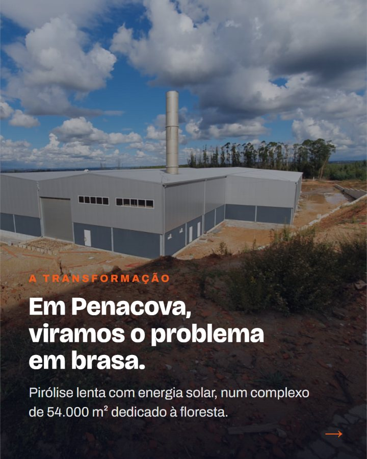
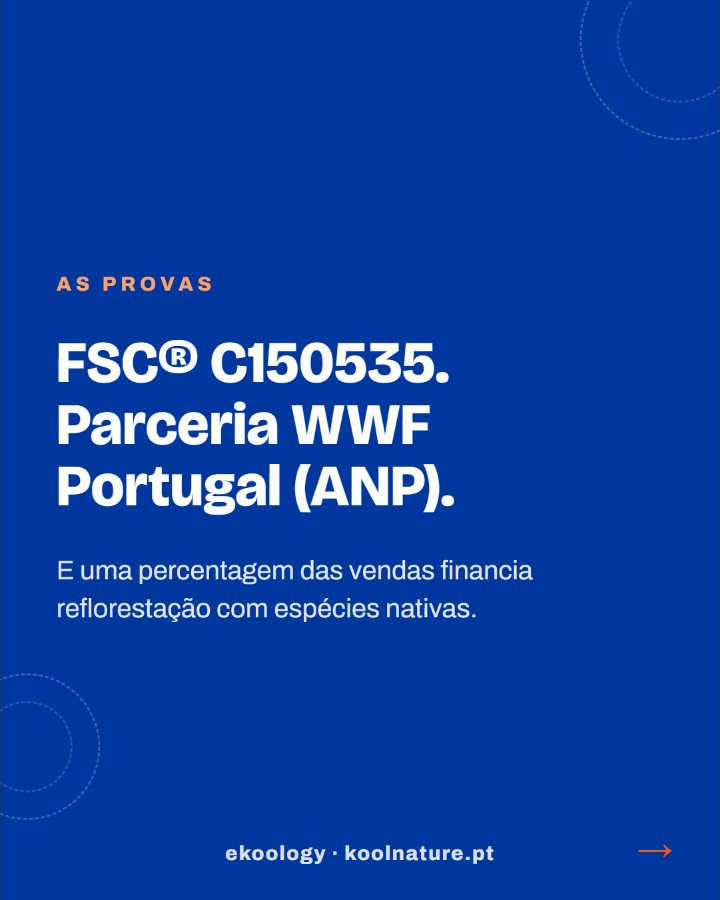
A história que está dentro de cada saco: 🌲
A acácia invasora sufoca a floresta portuguesa — cresce depressa, rouba água às espécies nativas e alimenta incêndios.
Nós arrancamo-la e, em Penacova, transformamo-la em biocarvão por pirólise lenta, com energia solar. Com certificação FSC® e parceria com a WWF Portugal (ANP) — e uma percentagem das vendas a financiar reflorestação nativa.
Quando escolhes EKOOLOGY, a tua grelhada faz parte da limpeza. Simples assim.
#EKOOLOGY #CadaGrelhadaLimpaAFloresta #AcáciaInvasora #FlorestaPortuguesa #FSC #WWF #Sustentabilidade #EconomiaCircular #Penacova
#15REEL
Reel de marca: 12 segundos de brasa
4.ª, 19 ago · 18h00 · Marca & Missão · loop curto para alcance
Isto não é carvão. É acácia invasora portuguesa com uma segunda vida. 🔥
+94% carbono fixo. Zero fumo. E uma floresta mais limpa a cada saco.
O carvão que junta pessoas → koolnature.pt
#EKOOLOGY #Biocarvão #Brasa #OCarvãoQueJuntaPessoas #CadaGrelhadaLimpaAFloresta #Satisfying #FireVideo
#16POST
Mostra-nos a tua grelhada
6.ª, 21 ago · 17h00 · Comunidade · arranque de UGC
Agora és tu. 📸
Este mês mostrámos-te o nosso mundo — o site, o manual, o Chef Kool, a floresta. Falta a peça mais importante: a TUA mesa.
Publica a tua grelhada, marca-nos e usa #CadaGrelhadaLimpaAFloresta. Todos os meses escolhemos as melhores para a nossa página — e a que mais nos fizer sentir «isto é que é estar juntos» ganha um cabaz EKOOLOGY para a próxima festa. 🔥
Toca a grelhar.
#EKOOLOGY #CadaGrelhadaLimpaAFloresta #OCarvãoQueJuntaPessoas #Churrasco #ComunidadeDaBrasa #Grelhados
Nota: o «cabaz EKOOLOGY» como prémio mensal precisa do OK do Nuno (custo ~1 saco + acessórios). Se preferirem, troca-se por simples repost das melhores.
#17POST
Receita doce: ananás caramelizado
Dom, 23 ago · 11h00 · Receitas · fechar o mês com açúcar
Plot twist: a brasa também faz sobremesas. 🍍
Ananás em rodelas de 2 cm, 3–4 minutos de cada lado em brasa média, canela por cima, raspa de lima e — se quiseres pontos extra — uma bola de gelado de baunilha a derreter em cima.
O açúcar do fruto carameliza na grelha e ninguém volta a olhar para a fruta da mesma maneira.
Mais sobremesas de brasa (pêssegos com mel, banana com chocolate): koolnature.pt → Receitas 🍨
#EKOOLOGY #SobremesasNaBrasa #AnanásGrelhado #ReceitasNaBrasa #Verão #GrelhadosDoces #CadaGrelhadaLimpaAFloresta
#18CARROSSEL · 5
O fogo certo para cada prato
2.ª, 24 ago · 12h30 · Manual & Chef Kool · conteúdo para GUARDAR
A pergunta que separa os curiosos dos mestres: onde pões a brasa? 🔥
🔥 FOGO DIRETO — brasa debaixo da comida. Peças finas e rápidas: sardinhas, bifes, lulas, legumes.
♨️ FOGO INDIRETO — brasa ao lado, tampa fechada. Peças grandes: frango inteiro, entrecosto, lombos.
⚖️ DUAS ZONAS — metade brasa, metade calma. Selas no quente, acabas no suave — e tens refúgio anti-labaredas.
Guarda este post: é o mapa de decisão de qualquer grelhada. E o Manual explica cada técnica ao detalhe → koolnature.pt
#EKOOLOGY #ManualDoGrelhador #FogoDireto #FogoIndireto #TécnicaDeBrasa #TruquesDeChef #Churrasco #CadaGrelhadaLimpaAFloresta
#19POST
HORECA: a brasa dos profissionais
4.ª, 26 ago · 18h00 · Prova social / B2B
Numa cozinha profissional não há segundas oportunidades: ou a brasa responde, ou o serviço atrasa. 👨🍳
É por isso que restaurantes e churrasqueiras — como a Carvoaria da Esquina do Chef Vítor Sobral — grelham com EKOOLOGY: brasa estável durante horas, sem fumo que incomode a sala, e menos carvão por serviço.
Tens um restaurante, churrasqueira ou marisqueira? Fornecemos o canal HORECA com entregas regulares, condições profissionais e apoio técnico de brasa.
📩 Pede uma amostra: koolnature.pt → Contactos
#EKOOLOGY #HORECA #RestaurantesPortugal #Churrasqueira #BrasaProfissional #Biocarvão #FoodService #CadaGrelhadaLimpaAFloresta
#20POST
Briquetes: as maratonas são com eles
6.ª, 28 ago · 17h00 · Produto
Grelhada de 20 minutos? Biocarvão. Maratona de 3 horas? Chama os briquetes. 🟣
Forma uniforme = brasa previsível e calor estável durante horas, sem recargas a meio do entrecosto. São a escolha dos profissionais e de quem leva o low & slow a sério.
Ideais para: entrecosto (88–92 °C, lembras-te? 😉), frango inteiro, defumados e qualquer receita em que o tempo é o ingrediente principal.
Formatos de 15 e 30 dm³ → koolnature.pt → Produtos
#EKOOLOGY #Briquetes #LowAndSlow #Entrecosto #BBQ #QueimaLonga #Grelhados #CadaGrelhadaLimpaAFloresta
#21POST
Receita de domingo: cataplana de marisco na brasa
Dom, 30 ago · 11h00 · Receitas
O fecho de agosto pede mar. E a cataplana na brasa é o mar em ponto de festa. 🦐
O ritual:
• Camadas de legumes no fundo, marisco por cima, vinho branco a regar
• Fecha-se a cataplana e vai à brasa média 15–18 minutos — SEM abrir (a tentação é grande, resiste)
• Vira-se a meio, com luvas
• Abre-se na mesa, para o vapor fazer o teatro
Receita completa: koolnature.pt → Receitas → Tachos de brasa. Bom domingo! 🌊
#EKOOLOGY #Cataplana #MariscoNaBrasa #ReceitasNaBrasa #CozinhaPortuguesa #DomingoEmFamília #CadaGrelhadaLimpaAFloresta
#22POST
Fecho do mês: obrigado, agosto
2.ª, 31 ago · 18h00 · Comunidade · fecho + teaser
Último dia de agosto. Primeiro mês desta casa nas redes. 🔵
Obrigado a todos os que espreitaram o site, fizeram perguntas ao Chef Kool, guardaram as temperaturas e — o mais importante — juntaram gente à volta de uma grelha.
O que vem aí:
📍 O mapa de pontos de venda, para encontrares EKOOLOGY perto de ti
💬 O Chef Kool a responder-te aqui mesmo, nos comentários e mensagens
🍂 E o outono… a pedir pellets
Fica por perto. A brasa está só a começar. 🔥
#EKOOLOGY #ObrigadoAgosto #OCarvãoQueJuntaPessoas #CadaGrelhadaLimpaAFloresta #VemAíSetembro #Biocarvão